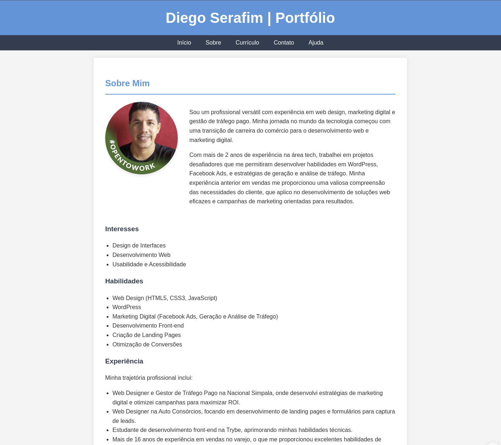

Disciplinas
INTERFACE HUMANO-COMPUTADOR Concluído
Materiais
Neste módulo, você aprendeu sobre os padrões de interface existentes e como construir protótipos de interface para web ou mobile.
Agora você irá construir um protótipo web ou mobile para aplicar suas habilidades de design e desenvolvimento, criando um protótipo de portfólio pessoal. Deixo como exemplo o portfólio do Thiago, https://souzaty.com, mas aproveite para explorar sua criatividade.
Siga os passos para elaboração e entrega da atividade.
Conteúdo
1) Leia o texto-base do módulo;
2) Escolha entre o uso do Figma ou HTML/CSS;
- Se quiser usar o Figma, assista a este minicurso da ferramenta: https://link.ufms.br/WleVu. Ou, então, você pode usar seus conhecimentos de HTML/CSS.
3) Planeje a estrutura de seu portfólio, incluindo:
- Página Inicial: inclua uma breve introdução sobre você, seus principais destaques e seus projetos desenvolvidos nas Atividades de Checkout de Presença desta disciplina;
- Página Sobre: inclua sua história, interesses, habilidades e experiência relevante;
- Página Currículo: inclua suas realizações acadêmicas e profissionais;
- Página Contato: inclua um formulário de contato (nome, e-mail, assunto, mensagem);
- Página Ajuda: inclua a descrição e localização de cada heurística de usabilidade, diretriz ou padrão utilizado no projeto;
4) Crie um protótipo para cada página (se usar HTML/CSS) ou faça o protótipo em um único arquivo (se usar Figma), definindo toda a interação do usuário;
5) Revise cada página em busca de erros de design, formatação, usabilidade e experiência de usuário;
6) Caso esteja criando o protótipo no Figma, exporte um link interativo. Se estiver trabalhando com HTML/CSS, crie uma pasta no Google Drive institucional e salve nela seus arquivos de código. Compartilhe a pasta com o domínio “Universidade Federal de Mato Grosso do Sul” com acesso de “Leitor”;
7) Envie no espaço de tarefa o link para o seu protótipo no Figma ou para a pasta no Google Drive.
Resolução:
Demonstração aqui →